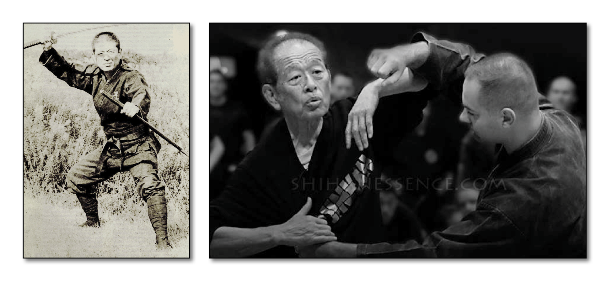

"School of Truth, Loyalty and Justice" - Dr. Hatsumi is the 15th Soke
Characteristics:
This school is most famous in the Bujinkan for the difficult and odd Kamae's of it's taijutsu. It is specialized in Koppojutsu. Gikan Ryû has many special punches, kicks, and throws, as well as special movement techniques.
Brief History:
The founder of this Ryû was Uryu Hangan Gikanbo. The 10th Soke, Uryu Gikan, befriended Ishitani Takeoi Masatsugu, Soke of Kukishinden Ryû and Takagi Yoshin Ryû at the time. After training him in Gikan Ryû Koppojutsu, Uryu Gikan presented him with Menkyo Kaiden and made him his successor.
"Bufu ni sente nashi" - "From this side there is not the first strike"
The History of Gikan Ryû Kopojutsu:
Gikan Ryû Koppojutsu was founded by Uryu Hangan Gikanbo (1558-1570), who was the Daimyo (feudal warlord) of Kawachi no Kuni (Kawachi Castle). It is said that Uryu Gikanbo's punch was so powerful that he once broke a sword blade in half. He was also a master of Hichojutsu and Senban Nage. The 10th Soke Uryu Gikan had been fighting in the battle now known as "Tenchigumi no Ran". This took place on the 17th August 1863. He was fighting for the emperor's army, but was shot in the arm. He still continued to fight with the use of only one arm. When he could he retired to the safety of a nearby temple. It was at this temple that he was met by Ishitani Takeoi Masatsugu, of the Kukishinden Ryû. He told Ishitani that the battle had already finished, so Ishitani then helped him to recover and afterwards escape to Iga. A friendship was then formed, and Ishitani was taught the Gikan Ryû and when he attained the required skill level, Uryu presented him with the Menkyo Kaiden, and he became the next Soke of the Gikan Ryû, adding this lineage to two others that he was already the Soke of. These being Kukishinden Ryû and Tagaki Yoshin Ryû.
Takamatsu Toshitsugu orginally awarded this system to Akimoto Fumio, who became the 14th soke. Akimoto met an untimely death from an illness around 1962, and he left no successor. The system therefore came back to Takamatsu Sensei. He passed the style onto Masaaki Hatsumi, who is the current soke, as listed in the Bugei Ryu-ha Daijiten. One of the special teachings of Gikan Ryû is "Bufu ni sente nashi" (From this side there is not the first strike). This Ryû contains many special kicks, punches and throws. We have been told that the makimono scrolls do not contain step by step instructions of techniques. There are no formal kata in the Gikan Ryû. The techniques are created based on the skill of the exponent, and are a combination of the body's movement and the methods of kicking and striking from the Ryû. The methods are taught orally.
Soke of Gikan Ryû:
Uryu Hangan Gikanbo Yeiroku Era (1558-1570)
Uryu Yoshimitsu Tensho Era (1573-1592)
Uryu Yoshimori Kan-ei Era (1624-1644)
Uryu Yoshichika Kambun Era (1661-1673)
Uryu Yoshitaka Genroku Era (1688-1704)
Uryu Yoshihide Horeki Era (1751-1764)
Uryu Yoshimori Kansei Era (1789-1801)
Uryu Yoshiaki Tenpo Era (1830-1844)
Uryu Yoshiyasu Bunkyu Era (1861-1864)
Uryu Gikan Keiko Era (1865-1868)
Ishitani Takeoi Masatsugu (approx. death 1905)
Ishitani Matsutaro Takekage (approx. death 1911)
Takamatsu Toshitsugu Uoh b. 1887 - d. 1972
Akimoto Fumio (approx. death 1962)
Hatsumi Masakki b. 1931 -